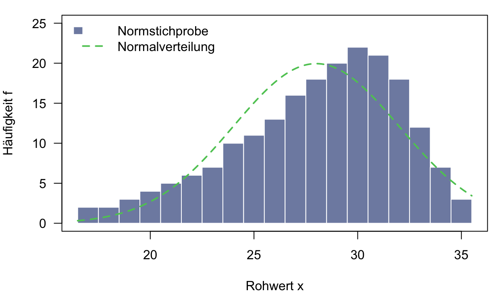
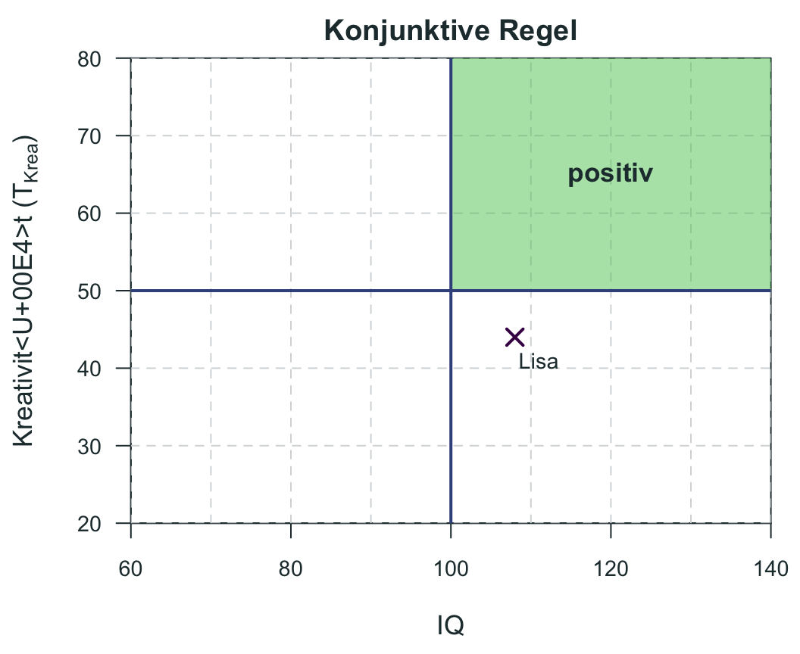
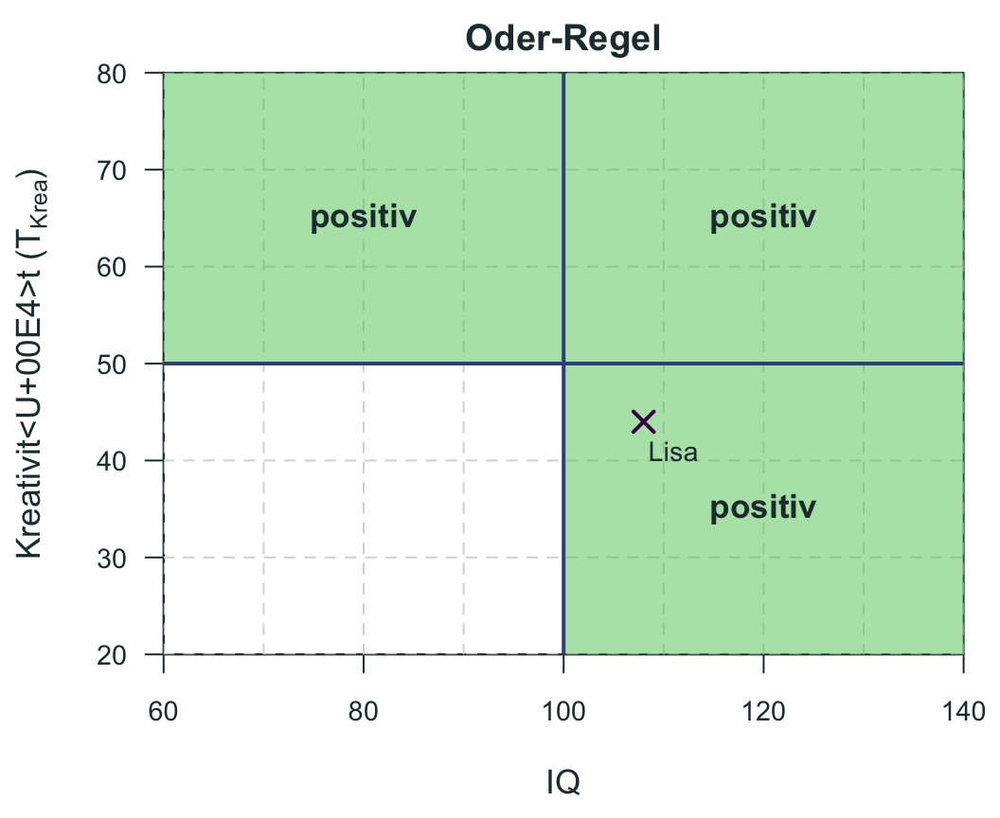
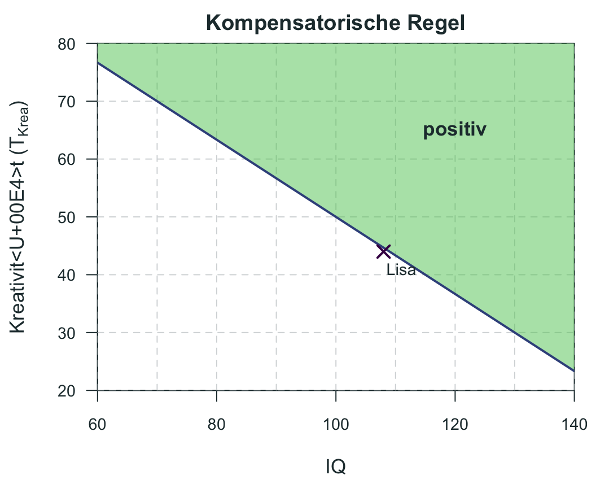
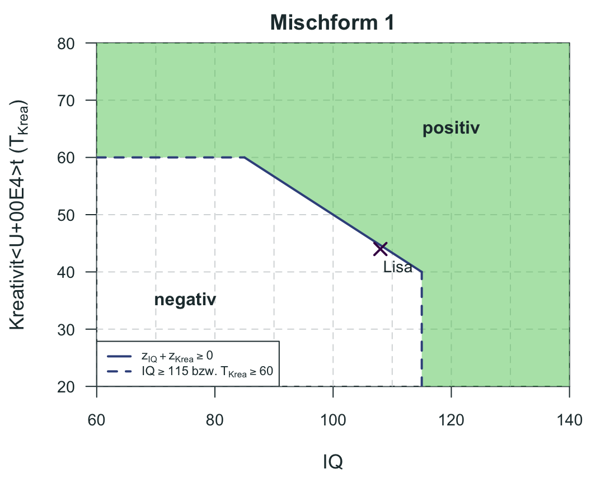
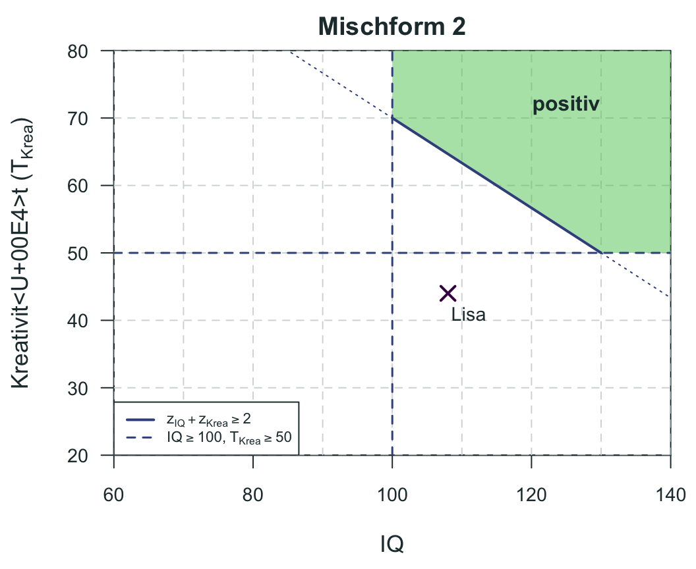

| \(r_{tc}\) | 0.05 | 0.10 | 0.20 | 0.30 | 0.40 | 0.50 | 0.60 | 0.70 | 0.80 | 0.90 | 0.95 |
|---|---|---|---|---|---|---|---|---|---|---|---|
| 0.05 | 0.54 | 0.53 | 0.53 | 0.52 | 0.52 | 0.52 | 0.51 | 0.51 | 0.51 | 0.50 | 0.50 |
| 0.10 | 0.58 | 0.57 | 0.56 | 0.55 | 0.54 | 0.53 | 0.53 | 0.52 | 0.51 | 0.51 | 0.50 |
| 0.15 | 0.62 | 0.60 | 0.58 | 0.57 | 0.56 | 0.55 | 0.54 | 0.53 | 0.52 | 0.51 | 0.51 |
| 0.20 | 0.66 | 0.64 | 0.61 | 0.59 | 0.58 | 0.56 | 0.55 | 0.54 | 0.53 | 0.52 | 0.51 |
| 0.25 | 0.70 | 0.67 | 0.64 | 0.62 | 0.60 | 0.58 | 0.56 | 0.55 | 0.54 | 0.52 | 0.51 |
| 0.30 | 0.74 | 0.71 | 0.67 | 0.64 | 0.62 | 0.60 | 0.58 | 0.56 | 0.54 | 0.52 | 0.51 |
| 0.35 | 0.78 | 0.74 | 0.70 | 0.66 | 0.64 | 0.61 | 0.59 | 0.57 | 0.55 | 0.53 | 0.51 |
| 0.40 | 0.81 | 0.77 | 0.72 | 0.69 | 0.66 | 0.63 | 0.61 | 0.58 | 0.56 | 0.53 | 0.52 |
| 0.45 | 0.85 | 0.81 | 0.75 | 0.71 | 0.68 | 0.65 | 0.62 | 0.59 | 0.56 | 0.53 | 0.52 |
| 0.50 | 0.88 | 0.84 | 0.78 | 0.74 | 0.70 | 0.67 | 0.63 | 0.60 | 0.57 | 0.54 | 0.52 |
| 0.55 | 0.91 | 0.87 | 0.81 | 0.76 | 0.72 | 0.69 | 0.65 | 0.61 | 0.58 | 0.54 | 0.52 |
| 0.60 | 0.93 | 0.90 | 0.84 | 0.79 | 0.75 | 0.70 | 0.66 | 0.62 | 0.58 | 0.54 | 0.52 |
| 0.65 | 0.95 | 0.92 | 0.87 | 0.82 | 0.77 | 0.73 | 0.68 | 0.64 | 0.59 | 0.55 | 0.52 |
| 0.70 | 0.97 | 0.95 | 0.90 | 0.85 | 0.80 | 0.75 | 0.70 | 0.65 | 0.60 | 0.55 | 0.52 |
| 0.75 | 0.99 | 0.97 | 0.92 | 0.87 | 0.82 | 0.77 | 0.72 | 0.66 | 0.61 | 0.55 | 0.53 |
| 0.80 | 0.99 | 0.98 | 0.95 | 0.90 | 0.85 | 0.80 | 0.73 | 0.67 | 0.61 | 0.55 | 0.53 |
| 0.85 | 1.00 | 0.99 | 0.97 | 0.94 | 0.88 | 0.82 | 0.76 | 0.69 | 0.62 | 0.55 | 0.53 |
| 0.90 | 1.00 | 1.00 | 0.99 | 0.97 | 0.92 | 0.86 | 0.78 | 0.70 | 0.62 | 0.56 | 0.53 |
| 0.95 | 1.00 | 1.00 | 1.00 | 0.99 | 0.96 | 0.90 | 0.81 | 0.71 | 0.62 | 0.56 | 0.53 |
| 1.00 | 1.00 | 1.00 | 1.00 | 1.00 | 1.00 | 1.00 | 0.83 | 0.71 | 0.63 | 0.56 | 0.53 |
6 Diagnostische Rechenkompetenzen I
WichtigWork in Progress
Dieses Kapitel wird derzeit intern überarbeitet. Aufgaben, Daten und Lösungen können sich noch ändern. Bitte bearbeiten Sie die Aufgaben erst, wenn die Überarbeitung abgeschlossen ist und dieser Hinweis entfernt wurde.
Runden Sie Ergebnisse bei Berechnungen kaufmännisch auf zwei Nachkommastellen. Alle Fälle und Daten sind fiktiv.
Aufgabe 1 (Taylor-Russell-Tafeln) Ein Logistikunternehmen besetzt jedes Jahr Ausbildungsplätze. Für die Vorauswahl setzt die Personalabteilung einen Eignungstest ein. In diesem Jahr gehen \(n = 250\) Bewerbungen für \(50\) Ausbildungsplätze ein. Aus den Vorjahren ist bekannt, dass etwa die Hälfte aller Bewerber:innen die Ausbildung erfolgreich abschließen würde. Laut Testmanual beträgt die Kriteriumsvalidität dieses Eignungstests für den Ausbildungserfolg \(r_{tc} = 0.40\).
- Bestimmen Sie die Grundquote (base rate, BR) und die Selektionsquote (selection ratio, SR) für das Szenario. Erläutern Sie beide Begriffe in je einem Satz.
TippLösung
- Grundquote: Anteil der Bewerber:innen, die ohne Testauswahl (d. h. bei zufälliger Auswahl) im Kriterium erfolgreich wären: BR = 0.50.
- Selektionsquote: Anteil der Bewerber:innen, die ausgewählt werden: SR = 50 / 250 = 0.20.
Tabelle 1 und Tabelle 2 zeigen die Taylor-Russell-Tafeln für die Grundquoten BR = .50 und BR = .40. Die Zellen enthalten die Erfolgsquote, d. h. den erwarteten Anteil geeigneter Personen unter den Ausgewählten.
| \(r_{tc}\) | 0.05 | 0.10 | 0.20 | 0.30 | 0.40 | 0.50 | 0.60 | 0.70 | 0.80 | 0.90 | 0.95 |
|---|---|---|---|---|---|---|---|---|---|---|---|
| 0.05 | 0.44 | 0.43 | 0.43 | 0.42 | 0.42 | 0.42 | 0.41 | 0.41 | 0.41 | 0.40 | 0.40 |
| 0.10 | 0.48 | 0.47 | 0.45 | 0.45 | 0.44 | 0.43 | 0.42 | 0.42 | 0.41 | 0.41 | 0.40 |
| 0.15 | 0.52 | 0.50 | 0.48 | 0.47 | 0.46 | 0.45 | 0.44 | 0.43 | 0.42 | 0.41 | 0.41 |
| 0.20 | 0.56 | 0.54 | 0.51 | 0.49 | 0.48 | 0.46 | 0.45 | 0.44 | 0.43 | 0.41 | 0.41 |
| 0.25 | 0.61 | 0.58 | 0.54 | 0.51 | 0.49 | 0.48 | 0.46 | 0.45 | 0.43 | 0.42 | 0.41 |
| 0.30 | 0.65 | 0.61 | 0.57 | 0.54 | 0.51 | 0.49 | 0.47 | 0.46 | 0.44 | 0.42 | 0.41 |
| 0.35 | 0.69 | 0.65 | 0.60 | 0.56 | 0.53 | 0.51 | 0.49 | 0.47 | 0.45 | 0.42 | 0.41 |
| 0.40 | 0.73 | 0.68 | 0.63 | 0.59 | 0.56 | 0.53 | 0.50 | 0.48 | 0.45 | 0.43 | 0.41 |
| 0.45 | 0.77 | 0.72 | 0.66 | 0.61 | 0.58 | 0.54 | 0.51 | 0.49 | 0.46 | 0.43 | 0.42 |
| 0.50 | 0.81 | 0.76 | 0.69 | 0.64 | 0.60 | 0.56 | 0.53 | 0.50 | 0.46 | 0.43 | 0.42 |
| 0.55 | 0.85 | 0.79 | 0.72 | 0.67 | 0.62 | 0.58 | 0.54 | 0.50 | 0.47 | 0.44 | 0.42 |
| 0.60 | 0.88 | 0.83 | 0.75 | 0.70 | 0.64 | 0.60 | 0.55 | 0.51 | 0.48 | 0.44 | 0.42 |
| 0.65 | 0.91 | 0.87 | 0.79 | 0.72 | 0.67 | 0.62 | 0.57 | 0.52 | 0.48 | 0.44 | 0.42 |
| 0.70 | 0.94 | 0.90 | 0.82 | 0.76 | 0.69 | 0.64 | 0.58 | 0.53 | 0.49 | 0.44 | 0.42 |
| 0.75 | 0.97 | 0.93 | 0.86 | 0.79 | 0.72 | 0.66 | 0.60 | 0.54 | 0.49 | 0.44 | 0.42 |
| 0.80 | 0.98 | 0.96 | 0.89 | 0.82 | 0.75 | 0.68 | 0.61 | 0.55 | 0.49 | 0.44 | 0.42 |
| 0.85 | 1.00 | 0.98 | 0.93 | 0.86 | 0.79 | 0.71 | 0.63 | 0.56 | 0.50 | 0.44 | 0.42 |
| 0.90 | 1.00 | 1.00 | 0.97 | 0.91 | 0.83 | 0.74 | 0.65 | 0.57 | 0.50 | 0.44 | 0.42 |
| 0.95 | 1.00 | 1.00 | 0.99 | 0.96 | 0.88 | 0.77 | 0.66 | 0.57 | 0.50 | 0.44 | 0.42 |
| 1.00 | 1.00 | 1.00 | 1.00 | 1.00 | 1.00 | 0.80 | 0.67 | 0.57 | 0.50 | 0.44 | 0.42 |
- Lesen Sie die Erfolgsquote für das Szenario aus der passenden Tafel ab. Wie viele der 50 ausgewählten Personen werden voraussichtlich die Ausbildung erfolgreich abschließen? Wie hoch ist der inkrementelle Wert dieses Eignungstests?
TippLösung
Erfolgsquote (Tabelle 1, \(r_{tc} = 0.40\), SR = 0.20): 0.72. Erwartet werden \(0.72 \cdot 50 = 36\) erfolgreiche Auszubildende. Ohne Test (Zufallsauswahl) wären es \(0.50 \cdot 50 = 25\). Der Test erhöht die Erfolgsquote um 22 Prozentpunkte (11 Personen mehr).
- Wie hoch wäre die Erfolgsquote, wenn Sie ein Verfahren mit \(r_{tc} = 0.00\) heranziehen würden? Begründen Sie Ihre Antwort.
TippLösung
Die Erfolgsquote entspräche der Grundquote (0.50). Ein Test ohne Zusammenhang mit dem Kriterium liefert keine Information darüber, wer erfolgreich sein wird; die Auswahl ist dann so gut wie zufällig, unabhängig von der Selektionsquote.
Betrachten Sie den folgenden Auszug einer Taylor-Russell-Tafel für eine feste Kriteriumsvalidität \(r_{tc} > 0\). Die Zellen \(a\), \(b\), \(c\) und \(d\) sind Erfolgsquoten.
Selektionsquote Grundquote 0.10 0.80 0.20 \(a\) \(b\) 0.50 \(c\) \(d\) Ergänzen Sie \(>\), \(<\) oder \(=\): (i) \(a \, \_ \, c\), (ii) \(b \, \_ \, d\), (iii) \(a \, \_ \, b\), (iv) \(c \, \_ \, d\).
TippLösung
- \(a < c\), (ii) \(b < d\), (iii) \(a > b\), (iv) \(c > d\).
Bei gleicher Selektionsquote führt eine höhere Grundquote zu einer höheren Erfolgsquote (i, ii); bei gleicher Grundquote führt eine niedrigere Selektionsquote, also eine strengere Auswahl, zu einer höheren Erfolgsquote (iii, iv).
Aufgabe 2 (Normwerte) Herr K. ist 28 Jahre alt und hat im Rahmen einer psychologischen Untersuchung das NEO-Fünf-Faktoren-Inventar (NEO-FFI) bearbeitet. Auf der Dimension Gewissenhaftigkeit erzielte er einen Rohwert von \(x = 38\). Tabelle 3 zeigt die Normwerte des NEO-FFI mit Mittelwerten (\(M\)) und Standardabweichungen (\(s\)) für verschiedene Normgruppen und alle fünf Dimensionen (zu Normwerten allgemein vgl. (Moosbrugger & Kelava, 2020)).
| Stichprobe | \(N\) | \(M\) NEU | \(s\) NEU | \(M\) EXT | \(s\) EXT | \(M\) OFF | \(s\) OFF | \(M\) VER | \(s\) VER | \(M\) GEW | \(s\) GEW |
|---|---|---|---|---|---|---|---|---|---|---|---|
| Männer, 16–20 | 480 | 20.82 | 7.59 | 28.59 | 6.52 | 31.12 | 7.39 | 28.26 | 6.06 | 28.81 | 7.74 |
| Männer, 21–24 | 1358 | 19.86 | 8.10 | 28.63 | 6.89 | 32.63 | 6.72 | 28.65 | 6.08 | 29.72 | 7.55 |
| Männer, 25–29 | 943 | 19.91 | 7.89 | 27.88 | 6.77 | 32.11 | 6.49 | 29.31 | 5.57 | 30.11 | 7.25 |
| Männer, 30–49 | 1035 | 18.80 | 7.82 | 26.82 | 6.66 | 30.68 | 6.56 | 29.02 | 5.81 | 31.41 | 6.86 |
| Männer, ≥ 50 | 403 | 19.05 | 7.15 | 25.43 | 6.15 | 28.84 | 6.12 | 29.54 | 4.97 | 33.37 | 5.97 |
| Frauen, 16–20 | 1686 | 25.28 | 8.19 | 29.67 | 6.61 | 33.18 | 6.06 | 30.51 | 5.85 | 29.52 | 7.33 |
| Frauen, 21–24 | 1925 | 23.42 | 8.37 | 29.48 | 6.70 | 33.62 | 6.20 | 30.66 | 5.67 | 30.52 | 7.34 |
| Frauen, 25–29 | 1189 | 22.98 | 8.40 | 28.78 | 6.83 | 32.76 | 6.46 | 31.28 | 5.35 | 30.82 | 6.90 |
| Frauen, 30–49 | 1992 | 22.04 | 8.28 | 27.87 | 6.41 | 31.34 | 6.15 | 31.09 | 5.19 | 32.43 | 6.54 |
| Frauen, ≥ 50 | 713 | 21.83 | 7.77 | 27.09 | 6.15 | 29.97 | 6.07 | 32.06 | 4.86 | 33.10 | 5.57 |
| Männer, repräsentativ | 423 | 19.68 | 7.60 | 26.33 | 6.39 | 29.20 | 6.51 | 29.21 | 5.34 | 32.11 | 6.29 |
| Frauen, repräsentativ | 448 | 22.22 | 7.97 | 27.41 | 6.52 | 29.71 | 6.54 | 31.68 | 5.15 | 33.08 | 5.90 |
| Bevölkerungsrepräsentative Quotenstichprobe | 871 | 20.99 | 7.89 | 26.88 | 6.47 | 29.47 | 6.53 | 30.45 | 5.38 | 32.61 | 6.11 |
- Welche Normgruppe aus der Tabelle ist für Herrn K. am besten geeignet? Begründen Sie Ihre Wahl.
TippLösung
Da keine nähere Fragestellung angegeben ist, wird Herrn K.s Wert an der bevölkerungsrepräsentativen Quotenstichprobe normiert (\(M = 32.61\), \(s = 6.11\)).
- Berechnen Sie den \(z\)-Wert und den \(T\)-Wert für Herrn K. auf der Dimension Gewissenhaftigkeit. Verwenden Sie dafür die bevölkerungsrepräsentative Quotenstichprobe als Normgruppe. Interpretieren Sie das Ergebnis.
HinweisHinweis
\[ z = \frac{x - M}{s}, \qquad T = 50 + 10 \cdot z \]
TippLösung
\(z = 0.88\) und \(T = 58.82\) (mit dem gerundeten \(z\)-Wert ergibt sich \(T = 58.80\)). Herr K. liegt leicht über dem Durchschnitt der Allgemeinbevölkerung.
Aufgabe 3 (Prozentränge) Für Herrn K. liegen die Ergebnisse eines weiteren Tests vor. Dieser wurde an einer Stichprobe von \(N = 200\) Personen normiert (\(M = 28\), \(SD = 4\)). Tabelle 4 und Abbildung 1 zeigen die Häufigkeitsverteilung der Rohwerte in der Normstichprobe.
| \(x\) | 17 | 18 | 19 | 20 | 21 | 22 | 23 | 24 | 25 | 26 | 27 | 28 | 29 | 30 | 31 | 32 | 33 | 34 | 35 |
|---|---|---|---|---|---|---|---|---|---|---|---|---|---|---|---|---|---|---|---|
| \(f\) | 2 | 2 | 3 | 4 | 5 | 6 | 7 | 10 | 11 | 13 | 16 | 18 | 20 | 22 | 21 | 18 | 12 | 7 | 3 |

Der empirische Prozentrang eines Rohwerts \(x\) ist der Prozentsatz der Personen in der Normstichprobe mit einem Wert \(\leq x\):
\[ PR_{\text{emp}}(x) = \frac{f_{\text{kum}}(x)}{N} \cdot 100 \]
Herr K. hat in diesem Test einen Rohwert von \(x = 34\).
- Berechnen Sie den empirischen Prozentrang für Herrn K. anhand der Häufigkeitstabelle.
TippLösung
\(f_{\text{kum}}(34) = 197\), also \(PR_{\text{emp}} = 197 / 200 \cdot 100 = 98.50\).
- Berechnen Sie den Prozentrang von Herrn K. unter der Annahme normalverteilter Testwerte.
HinweisHinweis
Berechnen Sie zunächst den \(z\)-Wert und nutzen Sie \(PR_{\text{NV}} = 100 \cdot \Phi(z)\). In R berechnet pnorm(z) den Wert \(\Phi(z)\).
TippLösung
\(z = 1.50\) und \(PR_{\text{NV}} = 100 \cdot \Phi(1.50) = 93.32\).
- Vergleichen Sie den empirischen mit dem normalverteilungsbasierten Prozentrang. Was fällt auf und wie lässt sich der Unterschied erklären?
TippLösung
Der empirische Prozentrang (98.50) liegt deutlich über dem normalverteilungsbasierten (93.32). Die Rohwerte in der Normstichprobe sind nicht normalverteilt, sondern linksschief (mehr Personen mit hohen als mit niedrigen Werten). Empirische Prozentränge sind genauer, wenn die tatsächliche Verteilung von der Normalverteilung abweicht.
Aufgabe 4 (Entscheidungsregeln) Eine Kunsthochschule möchte Studierende für den Studiengang „Kreatives Gestalten“ auswählen. Dazu werden zwei diagnostische Hypothesen aufgestellt:
- H.1: Die Bewerberin bzw. der Bewerber verfügt über mindestens durchschnittliche intellektuelle Fähigkeiten (IQ \(\geq\) 100).
- H.2: Die Bewerberin bzw. der Bewerber verfügt über mindestens durchschnittliche Kreativität (Kreativitätstest, \(T_{\text{Krea}} \geq 50\)).
- Formulieren Sie drei verschiedene Entscheidungsregeln (kompensatorische Regel, Oder-Regel, konjunktive Regel), mit denen die Kunsthochschule die beiden Hypothesen verknüpfen könnte.
TippLösung
- Kompensatorische Regel: Zulassung, wenn die Summe der \(z\)-Werte mindestens null beträgt: \(z_{\text{IQ}} + z_{\text{Krea}} \geq 0\) (entspricht einem gemittelten \(T\)-Wert von mindestens 50).
- Oder-Regel: Zulassung, wenn mindestens eine Hypothese zutrifft: \(\text{IQ} \geq 100\) oder \(T_{\text{Krea}} \geq 50\).
- Konjunktive Regel: Zulassung, wenn beide Hypothesen zutreffen: \(\text{IQ} \geq 100\) und \(T_{\text{Krea}} \geq 50\).
- Skizzieren Sie in einem Koordinatensystem (IQ von 60 bis 140 auf der \(x\)-Achse, \(T_{\text{Krea}}\) von 20 bis 80 auf der \(y\)-Achse) die Akzeptanzbereiche (positiver Entscheidungsbereich) der konjunktiven Regel und der Oder-Regel. Markieren Sie jeweils den positiven Bereich und die Grenzlinien.
TippLösung


Bei der konjunktiven Regel ist der Quadrant rechts oben positiv. Bei der Oder-Regel sind drei Quadranten positiv; nur der Bereich links unten (\(\text{IQ} < 100\) und \(T_{\text{Krea}} < 50\)) führt zu einer negativen Entscheidung.
Lisa bewirbt sich an der Kunsthochschule. Ihre Testergebnisse: IQ = 108, \(T_{\text{Krea}} = 44\).
- Wie fällt die Entscheidung unter der kompensatorischen Regel, der Oder-Regel und der konjunktiven Regel aus?
TippLösung
- Kompensatorische Regel: \(z_{\text{IQ}} = 0.53\), \(z_{\text{Krea}} = -0.60\), Summe \(-0.07 < 0\), also nicht zugelassen.
- Oder-Regel: zugelassen (\(\text{IQ} \geq 100\)).
- Konjunktive Regel: nicht zugelassen (\(\text{IQ} \geq 100\), aber \(T_{\text{Krea}} < 50\)).
- Skizzieren Sie die kompensatorische Regel im Koordinatensystem. Zeichnen Sie die Kompensationsgerade, markieren Sie den positiven Bereich und tragen Sie Lisas Ergebnis ein.
HinweisHinweis
Kompensationsgerade: \(z_{\text{IQ}} + z_{\text{Krea}} = 0\), d. h. \(\frac{\text{IQ} - 100}{15} + \frac{T_{\text{Krea}} - 50}{10} = 0\).
TippLösung

Die Kompensationsgerade verläuft von links oben nach rechts unten. Der positive Bereich liegt oberhalb der Geraden. Lisa liegt knapp darunter und wird nicht zugelassen.
Aufgabe 5 (Mischformen) In der Praxis werden die drei Entscheidungsregeln häufig zu Mischformen kombiniert. Abbildung 2 und Abbildung 3 zeigen zwei solche Mischformen, angewendet auf das Szenario der Kunsthochschule. Die Grenzen der Regeln sind in den Legenden angegeben.


- Beschreiben Sie die Entscheidungsregel in Abbildung 2. Wie heißt diese Mischform, und aus welchen Regeln (kompensatorische Regel, Oder-Regel, konjunktive Regel) setzt sie sich zusammen? Wird Lisa nach dieser Entscheidungsregel angenommen oder nicht?
TippLösung
Schwache Oder-Regel aus Oder-Regel und kompensatorischer Regel: Positiv ist, wer in mindestens einem Bereich einen Mindestwert erreicht (\(\text{IQ} \geq 115\) oder \(T_{\text{Krea}} \geq 60\)) oder wessen \(z\)-Werte sich zu mindestens null summieren (\(z_{\text{IQ}} + z_{\text{Krea}} \geq 0\), entspricht einem gemittelten \(T\)-Wert von mindestens 50). Lisa erreicht keine der beiden Schwellen und hat eine Summe von \(-0.07\): Lisa wird nicht angenommen.
- Beschreiben Sie die Entscheidungsregel in Abbildung 3. Wie heißt diese Mischform, und aus welchen Regeln setzt sie sich zusammen? Wird Lisa nach dieser Entscheidungsregel angenommen oder nicht?
TippLösung
Schwach konjunktive Regel aus konjunktiver und kompensatorischer Regel: Beide Mindestwerte müssen erfüllt sein (\(\text{IQ} \geq 100\) und \(T_{\text{Krea}} \geq 50\)), zusätzlich muss die Summe der \(z\)-Werte mindestens 2 betragen (\(z_{\text{IQ}} + z_{\text{Krea}} \geq 2\), entspricht einem gemittelten \(T\)-Wert von mindestens 60). Lisa verfehlt mit \(T_{\text{Krea}} = 44\) die Mindestanforderung: Lisa wird nicht angenommen.
Literatur
Moosbrugger, H., & Kelava, A. (Hrsg.). (2020). Testtheorie und Fragebogenkonstruktion (3. Aufl.). Springer Berlin Heidelberg. https://doi.org/10.1007/978-3-662-61532-4